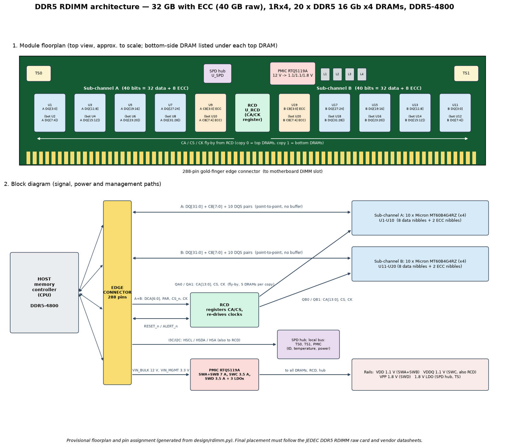
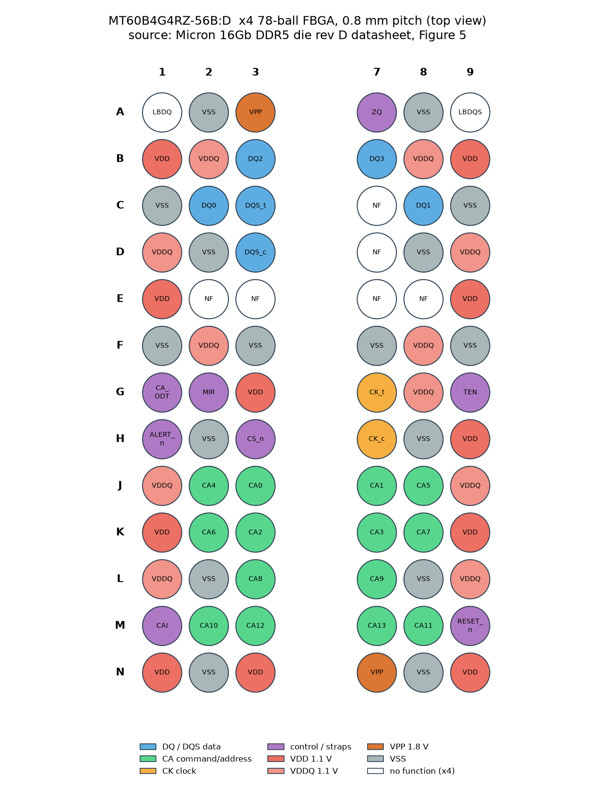
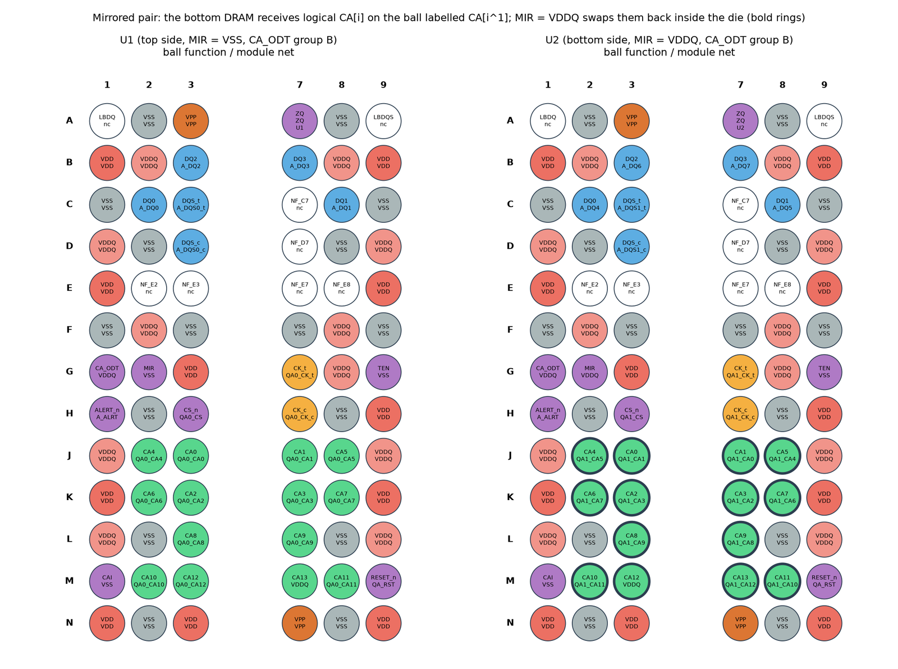

Chapter 11: Case Study: A 32 GB DDR5 Registered Module¶
From this chapter to Chapter 14 the book follows one real design from the single chip to the finished board: a 32 GB DDR5 registered DIMM (RDIMM) with error correction, designed as code with Python, the ngspice circuit simulator and the KiCad board-design suite, using real data sheets from Micron and Richtek. This chapter introduces the module, shows what sits on it, works out its capacity and bandwidth, and teaches the skill that underlies the whole project: reading a data sheet. It ends with the puzzle of the two-sided board, in which chips on the back are mirrored. Chapters 12 to 14 then take up signals, power, and the board with its firmware and manufacture.
11.1 Why a module is the worked example¶
The course that this book draws on chose a DDR5 module for two reasons. Memory sticks are designed by many companies, not only by the chip makers (Kingston, ADATA, Netlist and SMART Modular among them), and every part of the module can be studied with open tools. The chip level is explained in Chapters 2 and 15, and practised with SRAM in the assignments, but the module level is where a student can follow every wire.
How firm are these numbers?
The figures below come from the project's own calculations and from manufacturers' data sheets (the Micron 16 Gb DDR5 SDRAM die data sheet, the Richtek RTQ5119A power-management data sheet, and the JEDEC DDR5 standard JESD79-5). They are design-stage values, not measurements of a built module. When the course was written, architecture, pin maps, signal and power analysis were done, the parts were placed on a real board and the power planes added, and routing the copper traces was in progress. Three pin maps (RCD, SPD hub and the edge connector) were still missing because they need non-public data sheets and the JEDEC module standard.
11.2 Four levels: die, package, module, computer¶
A memory product exists at four levels.
- Die. The bare chip, about the size of a fingernail, made at the fab from a GDSII layout file.
- Package. A tiny circuit board with solder balls (a BGA) and black plastic. The chip of this project comes in a package with 78 balls, 7.5 × 11 mm.
- Module. The stick: a printed circuit board (PCB) carrying 20 memory chips, helper chips and the gold fingers of the edge connector.
- Computer. The module plugs into a DIMM slot, and the processor's memory controller talks to it.
The course designs the module level in full detail.
11.3 Anatomy of an RDIMM¶
Figure 11.1 shows the project's floorplan (top) and the paths that data, commands, power and management take (bottom). It was generated from the design code and is provisional: the final placement must follow the JEDEC RDIMM raw card and the vendors' data sheets.

The four kinds of part on the module are:
- 20 DRAM chips. The memory itself. 16 hold data and 4 hold the ECC check bits. Each sub-channel has 10 chips: 8 data nibbles plus 2 ECC nibbles.
- The RCD (register). A traffic controller: it receives commands from the processor and re-sends them cleanly to all 20 chips.
- The PMIC (power chip). It turns the 12 V from the motherboard into the 1.1 V and 1.8 V the chips need.
- The SPD hub and sensors. An identity card that tells the computer what this stick is, plus thermometers.
Data wires run point to point, one wire to one chip, with no buffer. Commands, however, must reach many chips, so they travel through the RCD on a shared route (the subject of Section 12.4).
11.4 The specification at a glance¶
| Quantity | Value |
|---|---|
| Data capacity | 32 GB, plus 8 GB of ECC check bits (40 GB raw) |
| DRAM chips | 20 × Micron MT60B4G4RZ, 16 Gb each, x4 |
| Rank and organisation | 1Rx4 (one rank of x4 chips) |
| Speed | DDR5-4800 (4800 MT/s per pin) |
| Peak bandwidth | 38.4 GB/s |
| Board | 10 copper layers, 1.27 mm thick |
| Components on the board | 205 |
| Electrical connections (nets) | 258 |
| Automated design checks | 86 passing |
| Edge connector | 288 pins |
Example 11.1: Where do 32 GB, 20 chips and 38.4 GB/s come from?
- Width. A DDR5 DIMM has two sub-channels. Each carries 32 data bits and 8 ECC bits, so 40 bits, and the DIMM carries \(2 \times 40 = 80\) bits.
- Chip count. The chips are x4, with four data pins each, so \(80 / 4 = 20\) chips, ten per sub-channel.
- Capacity. Each chip holds 16 Gb \(= 2\) GB. Twenty chips give \(20 \times 2 = 40\) GB raw. Sixteen of them carry data: \(16 \times 2 = 32\) GB; the other four give 8 GB of check bits.
- Bandwidth. The data path is \(2 \times 32 = 64\) bits at 4800 MT/s: \(4800 \times 64 / 8 / 1000 = 38.4\) GB/s. (The ECC bits do not count towards data bandwidth.)
- Check. Without ECC, sixteen x4 chips would fill 64 bits. A 1Rx4 ECC module is that module plus 25 per cent more chips, which is the price of reliability.
11.5 Design as code¶
Instead of drawing wires by hand, the project describes the module in Python. A program then builds the circuit board, runs the simulations and writes a design document. Change one number, rerun, and everything updates. Here is a fragment that wires the "strap" pins of every DRAM:
# from design/rdimm.py: straps on every DRAM
d.connect("VDDQ" if side == "bottom" else "VSS", ref, "MIR")
d.connect("VSS", ref, "CAI")
far_end = pos == 0 # last chip on the command bus
d.connect("VDDQ" if far_end else "VSS", ref, "CA_ODT")
Automated tests then check the design like a strict inspector: every pin connected, every data lane intact, power below each chip's limit, no parts overlapping. The 86 checks run in about two seconds. The project is organised like this:
| Folder | What lives there |
|---|---|
| design/ | Parts, connections, timing, placement, routing rules |
| design/pinmaps/ | Pin maps copied from the real data sheets |
| si/ | Signal simulations with ngspice, eye diagrams |
| power/ | Current budget and decoupling analysis |
| spd/ | The 1024-byte identity-card contents |
| pcb/ | Builds the KiCad board, custom footprints |
| tests/ | The automated checks |
| docs/ | Figures and the generated design document |
11.6 Reading a data sheet¶
A data sheet is the manufacturer's instruction manual for a part: every pin, every voltage, every timing, every current. Engineers read it line by line, because guesses are expensive. Figure 11.2 shows the ball map of the 78-ball x4 DRAM package from the Micron data sheet, colour-coded by function.

The project's authors made six assumptions before reading the data sheets, and the data sheets overturned all of them. Table 11.1 lists them. Each is a small lesson in why the data sheet is the contract.
| We assumed | The data sheet said |
|---|---|
| Nothing about the CA_ODT pin | A strap pin selects the termination group; it must be wired |
| All 14 command pins used | CA13 is unused at 16 Gb: tie its ball high |
| Chip power about 250 mA | Up to 377 mA during refresh bursts |
| The PMIC sits on the main bus | It sits on the hub's local bus |
| The PMIC's 1.0 V output powers other parts | Marked "for PMIC internal use only" |
| Simple rectangular pads | Corner chamfers are needed to keep 0.15 mm gaps |
Table 11.1: Six assumptions overturned by the data sheets.
Guesses are expensive
Several of these errors would not have shown up in simulation. A chip with a CA_ODT pin left floating, or a PMIC output used for something the maker reserves for itself, may behave unpredictably or not work at all. A data-sheet review is a design step, not a formality.
11.7 Two-sided boards and mirroring¶
To fit 20 chips, the module puts 10 on the front and 10 directly behind them on the back. A chip flipped over to the back has its pins mirrored left to right: the pin that was on the left is now on the right. Think of two people facing each other through a glass wall: your right hand lines up with their left.
DDR5 chips solve this with a MIR pin. Tie it high on the back-side chip, and the chip internally swaps its command pins in pairs, so that the board can wire the front and back chips straight through. In the project this is one rule: logical command bit \(i\) goes to the ball labelled CA[\(i \oplus 1\)] on mirrored chips (the XOR flips the lowest bit of the index). In the code fragment above, the MIR strap is tied to VDDQ for chips on the bottom side and to VSS otherwise. A test checks all 20 chips.

Example 11.2: Which ball does a mirrored chip use?
Using the rule CA[\(i \oplus 1\)]:
- Logical bit 2 is binary
10; XOR with 1 gives11, which is 3. On a mirrored chip, logical CA2 is carried on ball CA3. - Logical bit 3 (
11) becomes10, which is 2: CA3 is carried on ball CA2. The two trade places. - Logical bits 4 and 5 trade the same way: \(4 \oplus 1 = 5\) and \(5 \oplus 1 = 4\).
- In general the pairs (2, 3), (4, 5), (6, 7), and so on swap, so a single wire on the board lands on the correct function of both the front and the back chip.
A point where the source is ambiguous
The course text lists the swapped pairs starting at CA2 and CA3, while its rule \(i \oplus 1\) would also pair CA0 with CA1. The authoritative mirror table is the one in the chip's data sheet and the JEDEC standard; use that for any real design.
11.8 Summary¶
- The worked example is a 32 GB DDR5-4800 ECC RDIMM: 20 Micron 16 Gb x4 chips, an RCD, a PMIC and an SPD hub on a ten-layer board; peak bandwidth 38.4 GB/s.
- Width, chip count, capacity and bandwidth follow from simple arithmetic: 80 bits per DIMM (2 × (32 + 8)), 20 x4 chips, 32 GB data plus 8 GB of ECC.
- Describing the module as code lets tests check every connection and limit in seconds.
- The data sheet is the contract: it overturned six of the project's assumptions.
- Chips on the back of the board are mirrored; the MIR pin swaps command pins in pairs so both sides can be wired straight through.
11.9 Exercises¶
Exercise 11.1. How many x8 chips of 16 Gb would a 1Rx8 non-ECC DDR5 UDIMM have, and how many would a 1Rx8 ECC module have?
Answer
Non-ECC: \(64/8 = 8\) chips, 16 GB. ECC: \(2 \times 40 = 80\) bits, so \(80/8 = 10\) chips, still 16 GB of data.
Exercise 11.2. If the module's DRAM were DDR5-6400, what would its peak bandwidth be? What is the ratio to the DDR5-4800 module?
Answer
\(6400 \times 64 / 8 / 1000 = 51.2\) GB/s; the ratio to 38.4 GB/s is \(51.2/38.4 = 1.33\).
Exercise 11.3. A designer assumed a DRAM draws 250 mA. The data sheet gives 377 mA during refresh bursts. By what percentage is the assumption low, and what is the extra current for 20 chips?
Answer
\(377/250 = 1.508\), so the assumption is 33.7 per cent below the data-sheet value (equivalently, the data-sheet value is about 51 per cent higher). For 20 chips the extra is \(20 \times (377 - 250) = 2540\) mA, about 2.5 A.
Exercise 11.4. Apply the rule CA[\(i \oplus 1\)] to logical command bits 6 and 7, then to bit 8 and bit 9.
Answer
Bit 6 (0110) \(\oplus\) 1 = 0111 = 7, so logical CA6 uses ball CA7; bit 7 uses ball CA6. Bit 8 (1000) \(\oplus\) 1 = 1001 = 9, so CA8 uses ball CA9, and CA9 uses ball CA8.
Exercise 11.5. The project ties the MIR strap of back-side chips to VDDQ and of front-side chips to VSS. Explain why this must be done by a wire on the board, and why a test that checks all 20 chips is worth having.
Answer
MIR is an input pin whose logic level the chip reads, so the board must supply it: a high level tells the chip it is mirrored. If a front chip were wrongly tied high, or a back chip left low, its command bits would be swapped with respect to the board wiring, and commands would be decoded wrongly. A test over all 20 chips catches a single wrong strap that visual inspection might miss.